Bab 3 Optimisasi Parameter Pemulusan dengan Validasi Silang
library(smoothCV)3.1 Metode
3.1.1 Validasi Silang Deret Waktu
Validasi silang deret waktu merupakan modifikasi yang lebih canggih dari pembagian training dan testing. Salah satu variasi dari prosedur ini menghasilkan beberapa data uji yang tersusun atas satu observasi. Data latih merupakan semua observasi sebelum data uji tersebut. Beberapa observasi awal menjadi data latin (Hyndman dan Athanasopoulos 2021). Akurasi dihitung dengan merata-ratakan dari beberapa iterasi.
Cerqueira et al. (2020) mengevaluasi modifikasi dari algoritma di atas. Data dibagi menjadi beberapa blok - blok pertama menjadi data latih dan blok kedua menjadi data uji. Di iterasi selanjutnya, blok pertama dan kedua menjadi data latih dan blok ketiga menjadi data uji, dan seterusnya. Algoritma tersebut dibandingkan dengan sliding window, di mana blok-blok sebelumnya dilupakan (di iterasi kedua, blok kedua menjadi data latih dan blok ketiga menjadi data uji), dan algoritma lain yang memberikan gap. Algoritma tersebut dibandingkan dengan holdout (latih-uji tradisional) dan repeated holdout - algoritma di mana sebagian data telah dibagi menjadi training dan testing, tetapi titik pemisahan eksaknya dicari secara acak (misal, titik pemisahannya berada di antara \(70\%-90\%\) - akan dicari angka acak antara angka tersebut).
Metode validasi silang berperforma baik di data sintetis \(AR(3)\) dan \(SAR\), tetapi berperforma di bawah rata-rata untuk \(MA(1)\). Validasi silang berperforma baik di 31 deret waktu stasioner, tetapi kurang baik di 31 deret waktu non-stasioner. Repeated holdout nampaknya berperforma paling baik.
Schnaubelt (2019) melakukan simulasi metode tersebut di suatu deret waktu yang mengalami perubahan mean dan ragam setelah periode waktu tertentu. Secara umum, untuk metode validasi silang dengan blok yang membesar berperforma paling baik saat gangguan tidak sangat besar (koefisien berubah kurang dari \(15\%\)). Selebihnya metode holdout lebih baik.
Dalam implementasinya ke harga minyak, akan digunakan algoritma validasi silang:
- Pilih n data awal sebagai training.
- Bagi sisanya jadi beberapa fold buat testing. Fold ke-1 menjadi testing di iterasi 1, fold ke-2 jadi testing di iterasi 2
- Untuk tiap iterasi:
- Hitung error
- Gabungkan data testing ke data training. Gunakan fold selanjutnya sebagai testing.
Ini analog dengan validasi silang dengan blok yang membesar. COVID dan perang Ukraina-Rusia dapat dianggap sebagai gangguan pada harga minyak, tetapi perubahan koefisien secara khusus tidak diketahui. Dapat dianggap gangguan tersebut tidak besar karena tren harga minyak sebelum perang masih naik. Semisal gangguan tersebut besar, ambil saja data dengan iterasi terakhir.
3.1.2 Metrik
Ada tiga metrik yang akan dipakai. Diskusi metrik tersebut terkandung di Hyndman dan Athanasopoulos (2021):
\[ MSE=\frac{1}{n}\sum_{i=1}^n (y_t-\hat{y}_t)^2 \]
MSE secara umum memboboti outlier secara lebih besar. Suatu contoh numerik sederhana: anggap ada gugus data dengan error (1,1,1), dan gugus data lain dengan error (0,0,3). Maka:
\[ MSE_1=\frac{1}{3}(1^2+1^2+1^2)=1\\ MSE_2=\frac{1}{3}(0^2+0^2+3^2)=3 \]
Secara absolut, error sama tetapi di gugus kedua ada outlier: \[ MAPE=\frac{1}{n}\sum_{i=1}^n \left|\frac{y_t-\hat{y}_t}{y_t}\right| \]
Note, MAPE lebih memboboti observasi dengan nilai amatan kecil. Artinya, overestimasi diboboti lebih besar dari underestimasi. Contoh numerik lain, anggap dugaan adalah 2. Semisal nilai asli adalah 3, atau 1:
\[ \begin{aligned} MAPE_1&= \left|\frac{2-1}{1}\right|=1\\ MAPE_2&= \left|\frac{2-3}{1}\right|=\frac{1}{3} \end{aligned} \]
Dan MAE:
\[ MAE=\frac{1}{n}\sum_{i=1}^n \left|y_t-\hat{y}_t\right| \]
3.2 Single Moving Average
Single Moving Average adalah suatu teknik pemulusan yang bertujuan untuk melihat grafik secara eksploratif dengan cara menghitung rata-rata periode sekarang dengan periode sebelumnya. Hal ini berguna untuk melihat pola dari suatu data tanpa dipengaruhi data harian yang bergerak lebih ekstrem (Montgomery et al. 2008).
Rumus dari Single Moving Average adalah:
\[ \begin{aligned} M_{T} = \left[y_{T} + y_{(T-1)} + ... + y_{(T-n+1)}\right]/n = 1/N \\ \sum_{t=T-n+1}^{T} y_{t} \end{aligned} \]
3.3 Validasi silang untuk SMA
Lakukan validasi silang untuk SMA dengan jumlah data latih awal sebesar 36 untuk mendapat parameter optimal. Selebihnya, data dibagi menjadi 15 fold sehingga ada \((276-36)/15=16\) observasi di tiap fold. Nilai M yang diuji adalah dari 2 sampai 30.
SMACV<-fcCV(weeklyCrude[,3],initialn=36,folds=15,type="SMA",start=2,end=30,dist=1)Hasil dari prosedur tersebut:
resultSMA<-SMACV[[3]]Buat boxplot untuk melihat M yang meminimumkan error:
library(ggplot2)
ggplot(resultSMA,aes(x=M,y=MSE,group=M))+
geom_boxplot(fill="#E69F00")+theme_minimal()+
ggtitle("Boxplot MSE tiap M untuk SMA")+
xlab("M")+ylab(" ")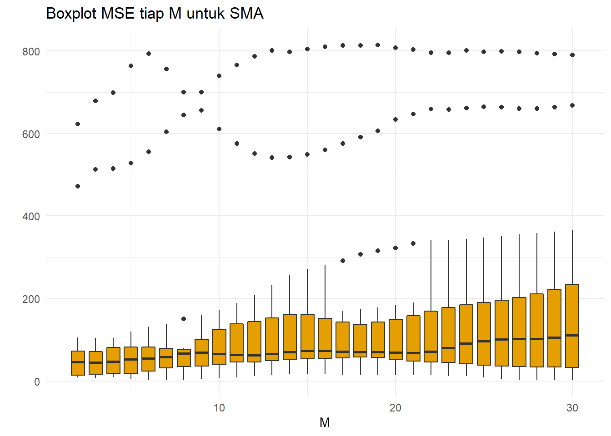
Dapat dilihat bahwa median MSE cenderung sama di tiap nilai parameter M. Setelah melewati \(M=20\), median baru terlihat naik. Namun, keragaman dari boxplot cenderung terus meningkat jika nilai parameter bertambah. Hampir semua boxplot memiliki pencilan. Bagaimana dengan MAPE?
library(ggplot2)
ggplot(resultSMA,aes(x=M,y=MAPE,group=M))+
geom_boxplot(fill="#E69F00")+theme_minimal()+
ggtitle("Boxplot MAPE tiap M untuk SMA")+
xlab("M")+ylab(" ")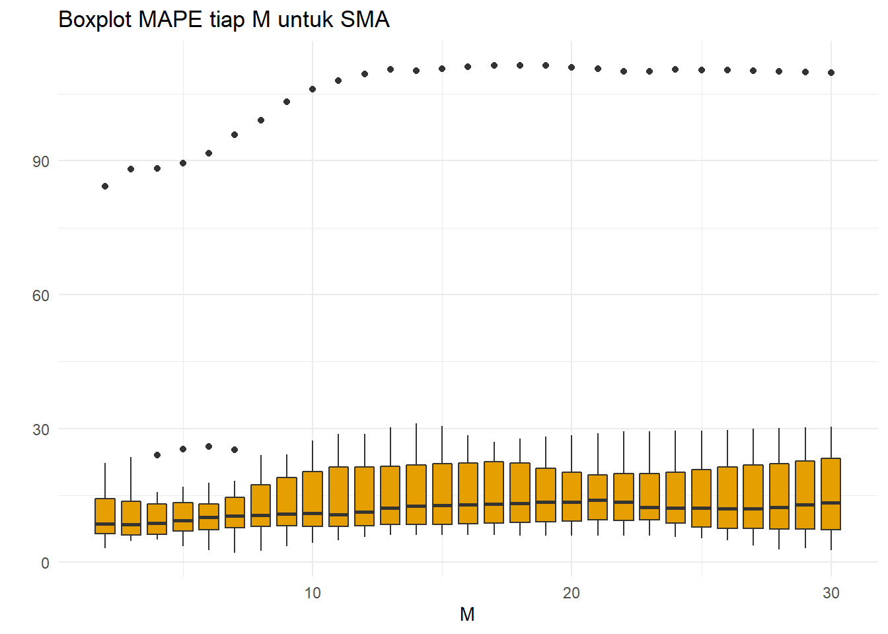
Hasil cukup mirip dengan MSE, tetapi ada sedikit perbedaan. Nilai pencilan pada boxplot MAPE cenderung meningkat seiring dengan bertambahnya nilai parameter M sampai \(M=10\), lalu stagnan. Bagaimana dengan MAE:
ggplot(resultSMA,aes(x=M,y=MAE,group=M))+
geom_boxplot(fill="#E69F00")+theme_minimal()+
ggtitle("Boxplot MAE tiap M untuk SMA")+
xlab("M")+ylab(" ")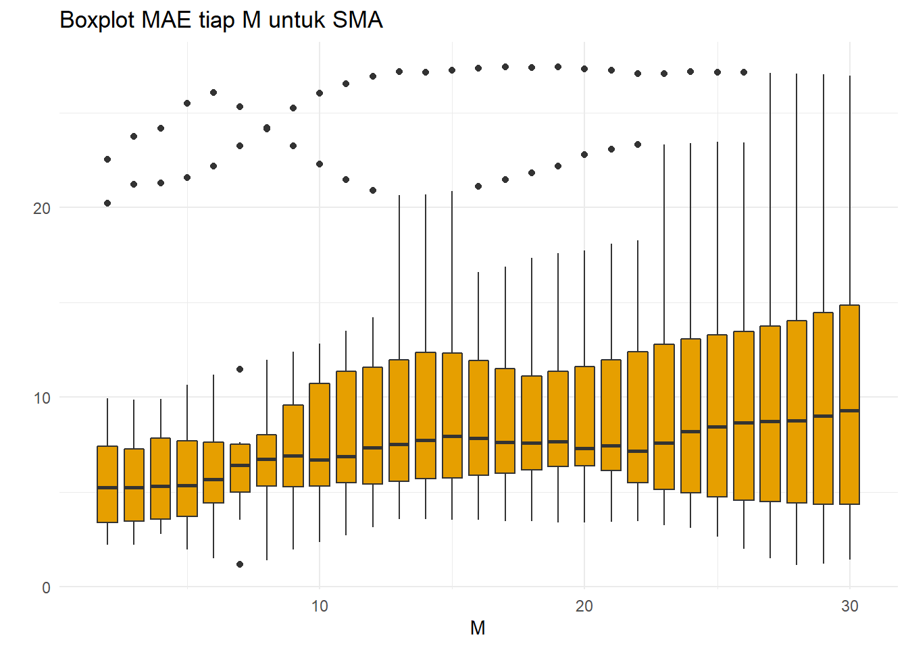
Garis median terlihat sedikit menaik saat nilai parameter M makin membesar. Nilai outlier di nilai \(M\leq 6\) terlihat menggerombol, sedangkan makin banyak M salah satu outlier bergabung ke boxplot dan satu lagi menjauh dari boxplot. Boxplot membesar sehingga kesalahan lebih beragam saat makin besar M. Lanjutkan dengan buat agregasi:
aggregateSMA<-resultSMA[,`.`(meanMSE=mean(MSE),
varMSE=var(MSE),
meanMAPE=mean(MAPE),
varMAPE=var(MAPE),
meanMAE=mean(MAE),
varMAE=var(MAE)), by=list(M)]Jika dilihat nilai M yang meminimumkan mean dari MSE, MAPE, dan MAE:
knitr::kables(list(
knitr::kable(head(setorder(aggregateSMA, meanMSE)[,c(1,2)],n=7),
col.names = c("M","MSE")),
knitr::kable(head(setorder(aggregateSMA, meanMAPE)[,c(1,4)],n=7),
col.names = c("M","MAPE")),
knitr::kable(head(setorder(aggregateSMA, meanMAE)[,c(1,6)],n=7),
col.names = c("M","MAE"))
),
caption="Rata-rata dari metrik akurasi untuk tiap nilai M (SMA)."
)
|
|
|
Nilai MSE dan MAPE berurutan dari 2, 3, …, 8 dari yang terkecil hingga terbesar. Kemudian, hitung nilai M yang meminimumkan ragam MSE dan MAPE:
knitr::kables(list(
knitr::kable(head(setorder(aggregateSMA, varMSE)[,c(1,3)],n=7),
col.names = c("M","MSE")),
knitr::kable(head(setorder(aggregateSMA, varMAPE)[,c(1,5)],n=7),
col.names = c("M","MSE")),
knitr::kable(head(setorder(aggregateSMA, varMAE)[,c(1,7)],n=7),
col.names = c("M","MSE"))
),
caption="Ragam dari metrik akurasi per iterasi untuk tiap nilai M (SMA)."
)
|
|
|
Urutan nilai M yang meminimumkan ragam metrik-metrik tersebut sedikit berbeda. Walaupun \(M=2\) memiliki performa terbaik dalam meminimumkan rata-rata metrik, \(M=3\) sepertinya lebih baik dalam meminimumkan ragam dari metrik-metrik tersebut. Ini secara umum berarti kesalahan-kesalahan dari \(M=3\) akan lebih sering mendekati suatu nilai tertentu, walaupun rataannya lebih besar dari \(M=2\). Dapat dipilih dua nilai tersebut sebagai parameter optimal.
Setelah itu, cari iterasi-iterasi yang memiliki akurasi rendah:
library(ggplot2)
ggplot(resultSMA,aes(x=iter,y=MSE,group=iter))+
geom_boxplot(fill="#E69F00")+theme_minimal()+
ggtitle("Boxplot MSE tiap Iterasi")+
xlab("Iterasi")+ylab(" ")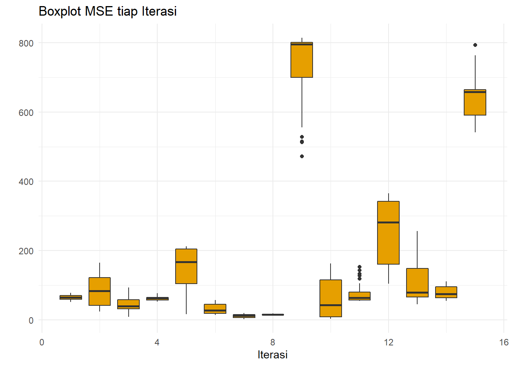
Boxplot untuk iterasi ke-9 (saat pandemi) dan ke-15 (pasca pandemi dan perang Rusia-Ukraina) memiliki rataan dan keragaman yang cukup besar dibandingkan iterasi lainnya pada data testing karena adanya fluktuasi yang ekstrem pada rentang waktu tersebut. Fluktuasi tersebut tidak cocok untuk SMA karena kurang dapat menangani data dengan tren.
library(ggplot2)
ggplot(resultSMA,aes(x=iter,y=MAPE,group=iter))+
geom_boxplot(fill="#E69F00")+theme_minimal()+
ggtitle("Boxplot MAPE tiap Iterasi")+
xlab("Iterasi")+ylab(" ")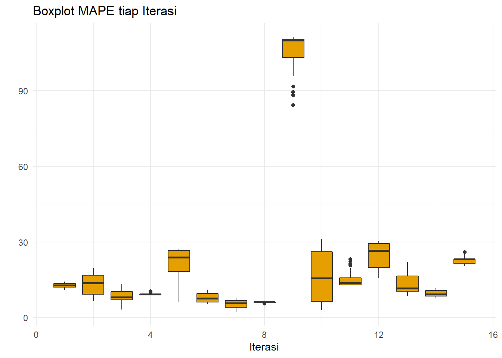
Boxplot untuk iterasi ke-15 ternyata tidak memiliki MAPE besar. Ini terjadi karena MAPE lebih memboboti observasi dengan nilai amatan kecil (COVID saat harga minyak turun) daripada saat nilai amatan besar (Ukraina-Rusia saat terjadi inflasi harga minyak).
library(ggplot2)
ggplot(resultSMA,aes(x=iter,y=MAE,group=iter))+
geom_boxplot(fill="#E69F00")+theme_minimal()+
ggtitle("Boxplot MAE tiap Iterasi")+
xlab("Iterasi")+ylab(" ")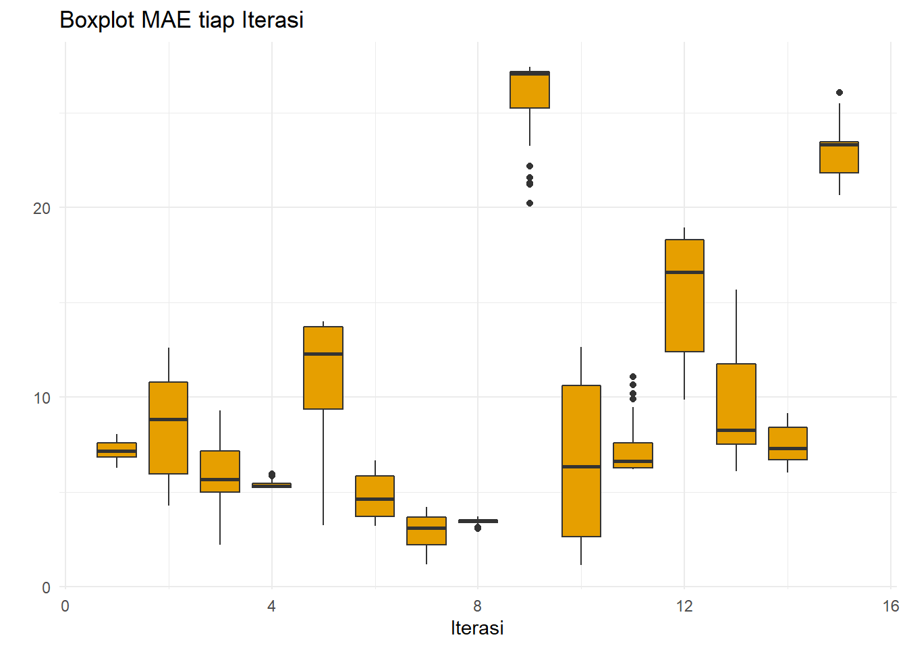
Boxplot MAE per iterasi mengikuti boxplot MSE - terjadi performa buruk di iterasi ke-9 dan 15.
3.4 DMA
Lakukan validasi silang untuk DMA dengan jumlah data latih awal sebesar 36 untuk mencari nilai parameter optimum. Selebihnya, data dibagi menjadi 15 fold sehingga ada \((276-36)/15=16\) observasi di tiap fold. Nilai M yang diuji adalah dari 2 sampai 16.
DMACV<-fcCV(weeklyCrude[,3],initialn=36,folds=15,type="DMA",start=2,end=16,dist=1)Ambil hasil dari prosedur tersebut:
resultDMA<-DMACV[[3]]Buat boxplot untuk melihat M yang meminimumkan error:
library(ggplot2)
ggplot(resultDMA,aes(x=M,y=MSE,group=M))+
geom_boxplot(fill="#E69F00")+theme_minimal()+
ggtitle("Boxplot MSE tiap M")+
xlab("M")+ylab(" ")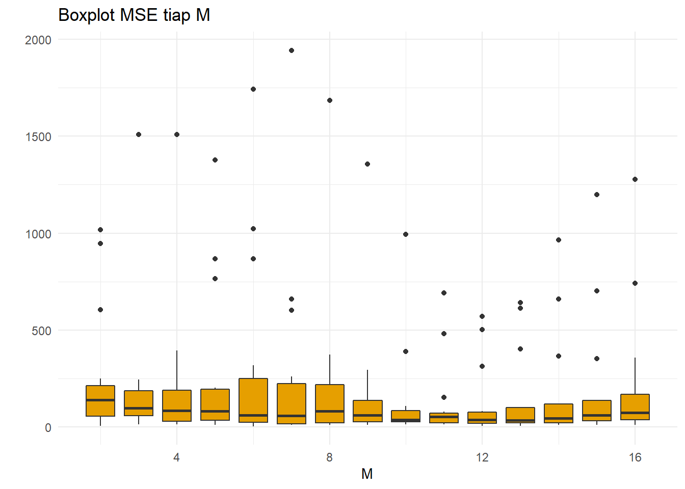
Dapat dilihat bahwa error dari tiap parameter cukup bervariasi di tiap iterasi. Hampir semua boxplot memiliki pencilan yang sangat jauh dari kebanyakan observasi. Namun, terlihat bahwa di \(9\leq M\leq 12\) keragamanboxplot lebih kecil, outlier lebih dekat, dan garis median lebih rendah dari boxplot lainnya. Ini berarti MSE di DMA dengan parameter tersebut biasanya rendah dan tidak beragam. Bagaimana dengan MAPE?
library(ggplot2)
ggplot(resultDMA,aes(x=M,y=MAPE,group=M))+
geom_boxplot(fill="#E69F00")+theme_minimal()+
ggtitle("Boxplot MAPE tiap M")+
xlab("M")+ylab(" ")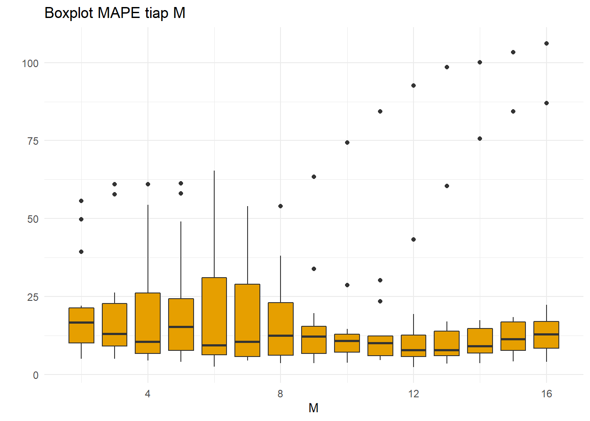
Hasil cukup mirip dengan MSE, tetapi ada sedikit perbedaan. Terlihat bahwa di \(4\leq M \leq 7\), boxplot tidak memiliki pencilan sama sekali. Justru, daerah yang sebelumnya dianggap baik, \(9 \leq M \leq 12\) memiliki beberapa pencilan walaupun boxplot di daerah tersebut menunjukkan keragaman lebih kecil di antara kuantil pertama sampai ketiga.
library(ggplot2)
ggplot(resultDMA,aes(x=M,y=MAE,group=M))+
geom_boxplot(fill="#E69F00")+theme_minimal()+
ggtitle("Boxplot MAE tiap M")+
xlab("M")+ylab(" ")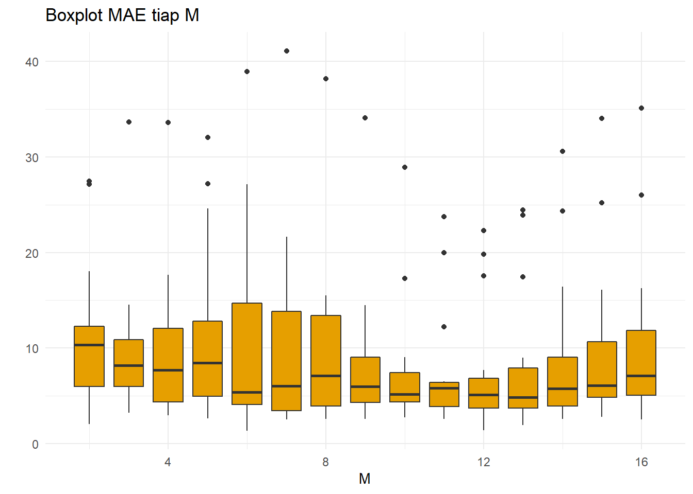
Boxplot MAE memiliki pola yang mengikuti MSE. Untuk memastikan, buat agregasi data error dari tiap nilai M:
aggregateDMA<-resultDMA[,`.`(meanMSE=mean(MSE),
varMSE=var(MSE),
meanMAPE=mean(MAPE),
varMAPE=var(MAPE),
meanMAE=mean(MAE),
varMAE=var(MAE)), by=list(M)]Jika dilihat nilai M yang meminimumkan mean dari MSE:
knitr::kables(list(
knitr::kable(head(setorder(aggregateDMA, meanMSE)[,c(1,2)],n=7),
col.names = c("M","MSE")),
knitr::kable(head(setorder(aggregateDMA, meanMAPE)[,c(1,4)],n=7),
col.names = c("M","MAPE")),
knitr::kable(head(setorder(aggregateDMA, meanMAE)[,c(1,6)],n=7),
col.names = c("M","MAE"))
), caption="Rata-rata metrik akurasi di semua iterasi untuk tiap nilai M"
)
|
|
|
Tampak bahwa nilai M=10 cukup konsisten baik (ranking 2) di MSE, MAPE, dan MAE. Nilai M=11 juga meminimumkan nilai harapan MAE dan MSE, tetapi tidak meminimumkan nilai harapan MAPE. Bagaimana dengan ragam dari MSE, MAPE, dan MAE?
knitr::kables(list(
knitr::kable(head(setorder(aggregateDMA, varMSE)[,c(1,3)],n=7),
col.names = c("M","MSE")),
knitr::kable(head(setorder(aggregateDMA, varMAPE)[,c(1,5)],n=7),
col.names = c("M","MAPE")),
knitr::kable(head(setorder(aggregateDMA, varMAE)[,c(1,7)],n=7),
col.names = c("M","MAE"))
), caption="Ragam metrik akurasi di semua iterasi untuk tiap M"
)
|
|
|
M=10 dan 11 konsisten baik di berbagai metrik kecuali ragam dari MAPE.
Dapat juga dilihat iterasi mana yang memiliki kesalahan tinggi:
library(ggplot2)
ggplot(resultDMA,aes(x=iter,y=MSE,group=iter))+
geom_boxplot(fill="#E69F00")+theme_minimal()+
ggtitle("Boxplot MSE tiap Iterasi")+
xlab("Iterasi")+ylab(" ")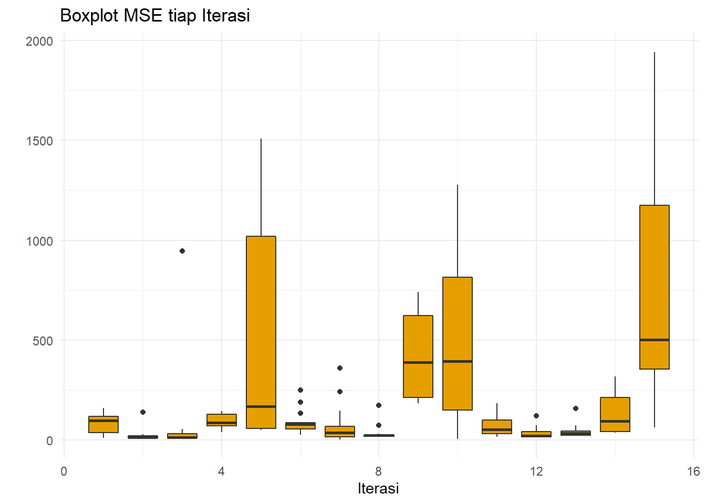
Error terbesar ada di iterasi 5, 9, 10, dan 15. Iterasi 15 merupakan perang Rusia-Ukraina. Ada apa di iterasi 9 dan 10 tersebut?
knitr::kables(list(
knitr::kable(c(DMACV[[1]][5],DMACV[[2]][5]),col.names =
"Range data iterasi 5"),
knitr::kable(c(DMACV[[1]][9],DMACV[[1]][10],DMACV[[2]][10]),col.names =
"Range data iterasi 9-10")
)
)
|
|
Cari tanggal tanggal tersebut:
knitr::kable(weeklyCrude[,2][c(101,116,165,181,196)])| Date |
|---|
| 2018-12-07 |
| 2019-03-22 |
| 2020-02-28 |
| 2020-06-19 |
| 2020-10-02 |
Dari 2018-2019, harga turun. Tentu, 2020 adalah COVID. Namun, dari MSE terlihat bahwa performa DMA beragam. Di SMA, di iterasi tersebut boxplot hampir homogen memiliki nilai error tinggi. Ini berarti, ada nilai-nilai M tertentu yang dapat meminimukan error di data tren tersebut.
library(ggplot2)
ggplot(resultDMA,aes(x=iter,y=MAE,group=iter))+
geom_boxplot(fill="#E69F00")+theme_minimal()+
ggtitle("Boxplot MAE tiap Iterasi")+
xlab("Iterasi")+ylab(" ")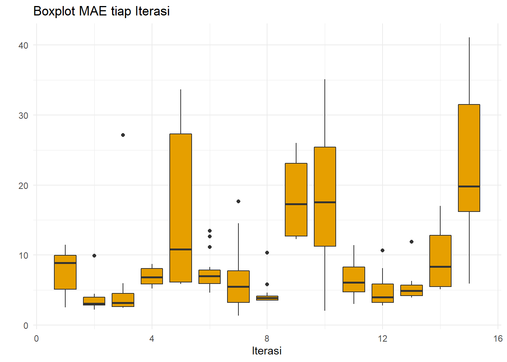
Profil boxplot MAE untuk iterasi relatif sama dengan boxplot MSE.
library(ggplot2)
ggplot(resultDMA,aes(x=iter,y=MAPE,group=iter))+
geom_boxplot(fill="#E69F00")+theme_minimal()+
ggtitle("Boxplot MAPE tiap Iterasi")+
xlab("Iterasi")+ylab(" ")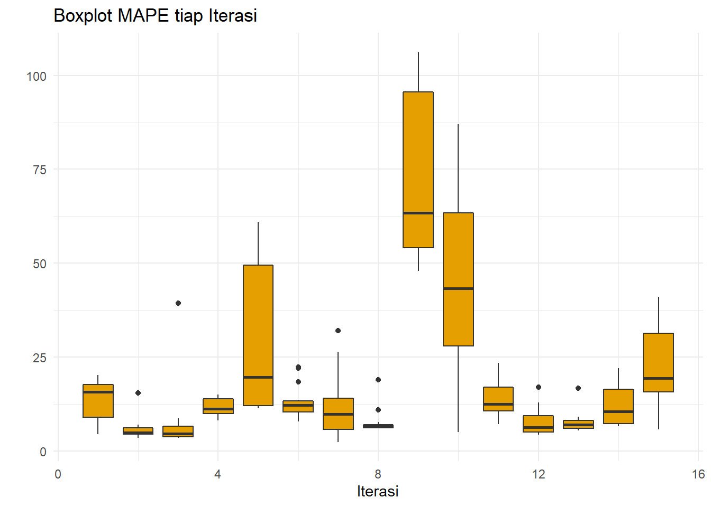
MAPE tidak memboboti error saat perang Ukraina dan Rusia, sama seperti saat SMA. Parameter terbaika dalah \(M=10\) dan \(M=11\).
3.5 SES
SESCV<-fcCV(weeklyCrude[,3],initialn=36,folds=15,type="SES",alphrange=seq(0.01,1,0.01))Masukkan hasilnya:
resultSES<-SESCV[[3]]Karena ada 100 nilai alpha yang berbeda, tidak praktis untuk membuat boxplot untuk semua nilai tersebut. Bulatkan nilai alpha sebesar satu desimal \((0.1, 0.2, \ldots)\) lalu buat boxplot. Gunakan latex2exp (Meschiari 2022) untuk menghasilkan teks judul dan sumbu x dengan simbol \(\alpha\):
library(latex2exp)
ggplot(resultSES,aes(x=alpha,y=MSE,group=round(alpha,1)))+
geom_boxplot(fill="#E69F00")+theme_minimal()+
ggtitle("Boxplot MSE di tiap alpha")+
xlab(TeX(r'($\alpha$)'))+ylab(" ")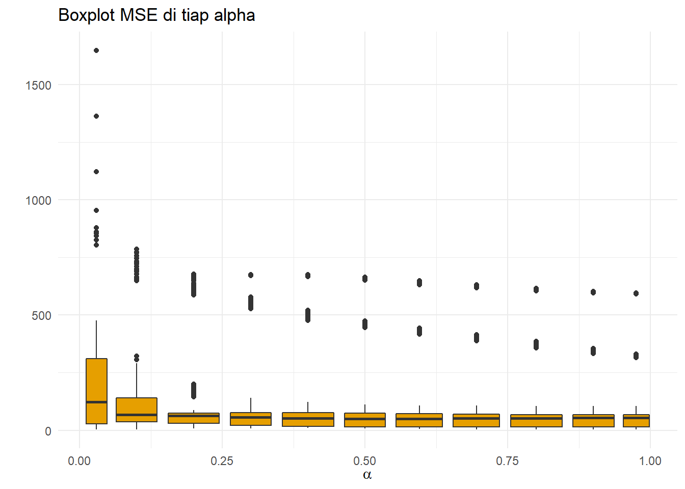
Sepertinya, makin besar nilai alpha hasil pemulusan semakin baik. Ini berarti bobot observasi sekarang lebih besar dari observasi sebelumnya. :
ggplot(resultSES,aes(x=alpha,y=MAE,group=round(alpha,1)))+
geom_boxplot(fill="#E69F00")+theme_minimal()+
ggtitle("Boxplot MAE di tiap alpha")+
xlab(TeX(r'($\alpha$)'))+ylab(" ")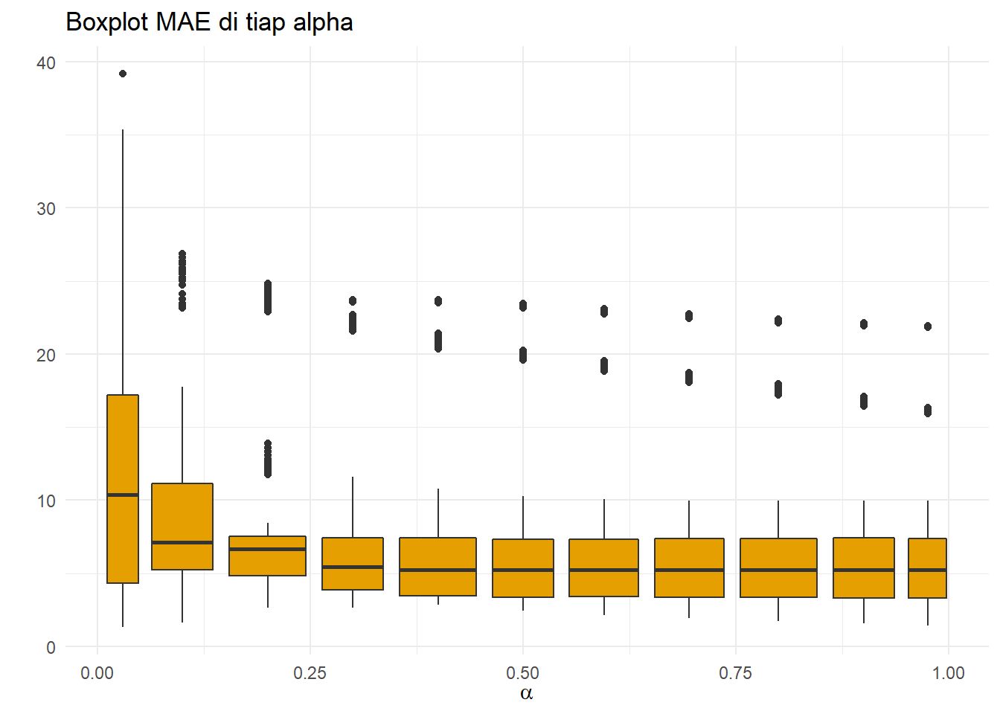
MAE nampaknya juga mengikuti pola tersebut.
ggplot(resultSES,aes(x=alpha,y=MAPE,group=round(alpha,1)))+
geom_boxplot(fill="#E69F00")+theme_minimal()+
ggtitle("Boxplot MAPE di tiap alpha")+
xlab(TeX(r'($\alpha$)'))+ylab(" ")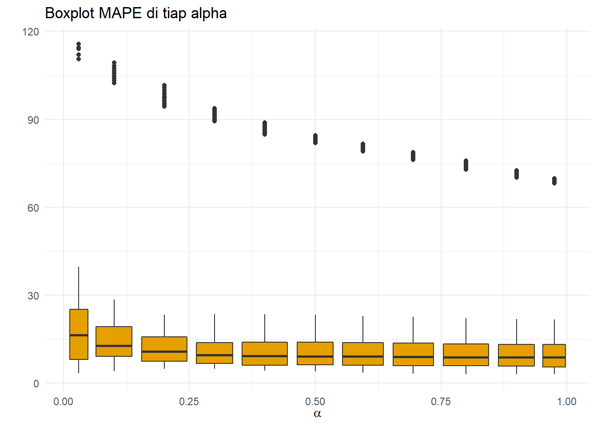
MAPE juga mengikuti pola umum tersebut, tetapi nampaknya di \(\alpha=0.5\) nilai pencilan minimum. Lakukan agregasi:
aggregateSES<-resultSES[,`.`(meanMSE=mean(MSE),
varMSE=var(MSE),
meanMAPE=mean(MAPE),
varMAPE=var(MAPE),
meanMAE=mean(MAE),
varMAE=var(MAE)), by=list(alpha)]Jika dilihat nilai \(\alpha\) yang meminimumkan mean dari MSE, MAPE, MAE:
knitr::kables(list(
knitr::kable(head(setorder(aggregateSES, meanMSE)[,c(1,2)],n=20),
col.names = c("$\\alpha$",'MSE')),
knitr::kable(head(setorder(aggregateSES, meanMAPE)[,c(1,4)],n=20),
col.names = c("$\\alpha$",'MAPE')),
knitr::kable(head(setorder(aggregateSES, meanMAE)[,c(1,6)],n=20),
col.names = c("$\\alpha$",'MAE'))
), caption="Rata-rata metrik akurasi untuk semua iterasi di tiap nilai $\\alpha$"
)
|
|
|
Nilai-nilai dari tabel ini cukup kontradiktif. Untuk meminimumkan MSE, sebaiknya mengambil \(\alpha\) sekitar 0.9. MAPE minimum di \(\alpha\) 0.6 sampai 0.7, sedangkan MAE minimum di \(\alpha\) 0.8. Bagaimana dengan ragam dari MSE, MAPE, dan MAE?
knitr::kables(list(
knitr::kable(head(setorder(aggregateSES, varMSE)[,c(1,3)],n=7),
col.names = c("$\\alpha$",'MSE')),
knitr::kable(head(setorder(aggregateSES, varMAPE)[,c(1,5)],n=7),
col.names = c("$\\alpha$",'MAPE')),
knitr::kable(head(setorder(aggregateSES, varMAE)[,c(1,7)],n=7),
col.names = c("$\\alpha$",'MAE'))
), caption="Ragam metrik akurasi untuk semua iterasi di tiap nilai $\\alpha$"
)
|
|
|
Ragam minimum MSE dan MAE minimum saat alpha mendekati 1, sedangkan ragam MAPE minimum saat alpha mendekati 0.5. Bagaimana dengan performa di tiap iterasi?
ggplot(resultSES,aes(x=iter,y=MSE,group=iter))+
geom_boxplot(fill="#E69F00")+theme_minimal()+
ggtitle("Boxplot MSE tiap Iterasi")+
xlab("Iterasi")+ylab(" ")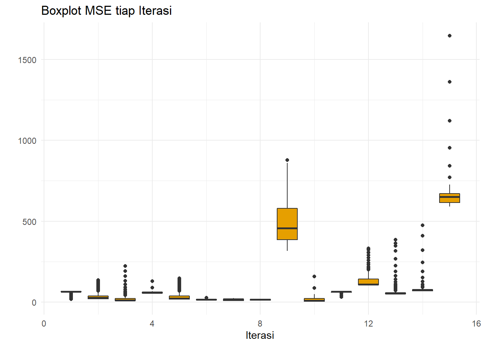
Boxplot untuk iterasi ke-9 (saat pandemi) dan ke-15 (pasca pandemi dan perang Rusia-Ukraina) memiliki rataan dan keragaman yang cukup besar dibandingkan iterasi lainnya pada data testing karena adanya fluktuasi yang ekstrem pada rentang waktu tersebut. Fluktuasi tersebut tidak cocok untuk SES karena kurang dapat menangani data dengan tren.
ggplot(resultSES,aes(x=iter,y=MAPE,group=iter))+
geom_boxplot(fill="#E69F00")+theme_minimal()+
ggtitle("Boxplot MAPE tiap Iterasi")+
xlab("Iterasi")+ylab(" ")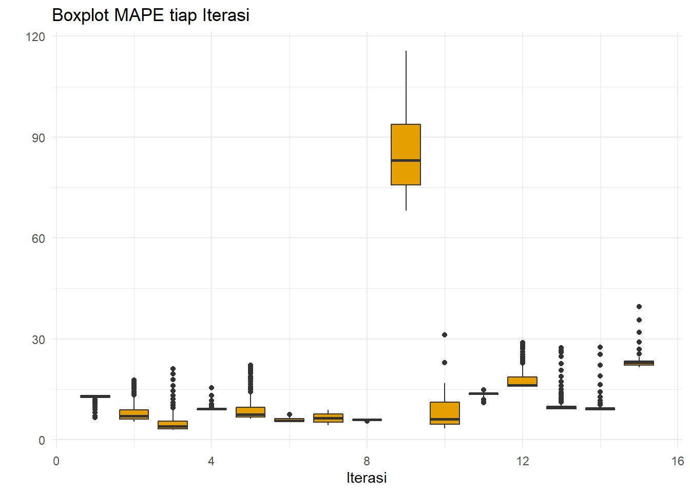
Boxplot untuk iterasi ke-15 ternyata tidak memiliki MAPE besar. Ini terjadi karena MAPE lebih memboboti observasi dengan nilai amatan kecil (COVID saat harga minyak turun) daripada saat nilai amatan besar (Ukraina-Rusia saat terjadi inflasi harga minyak).
ggplot(resultSES,aes(x=iter,y=MAE,group=iter))+
geom_boxplot(fill="#E69F00")+theme_minimal()+
ggtitle("Boxplot MAE tiap Iterasi")+
xlab("Iterasi")+ylab(" ")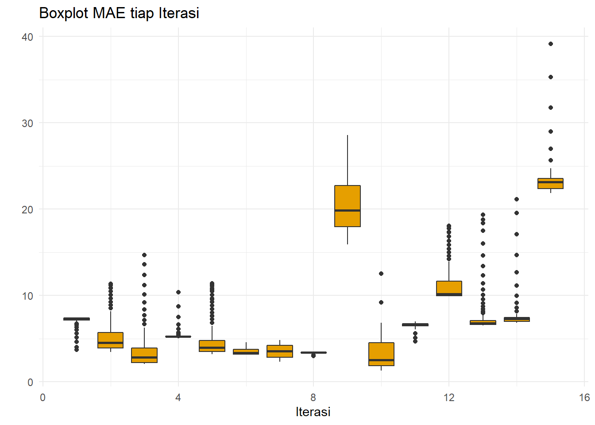
Boxplot MAE per iterasi secara umum lebih mengikuti MSE. Sama seperti SMA, nilai error homogen buruk di iterasi 9 dan 15.
3.6 DES
Load fungsi:
DESCV<-fcCV(weeklyCrude[,3],initialn=36,folds=15,type="DES",alphrange=seq(0.1,1,0.1),betarange=seq(0.1,1,0.1))Masukkan hasilnya:
resultDES<-DESCV[[3]]Karena parameter DES memiliki dua dimensi (alpha dan beta), cukup susah untuk menampilkan hasil optimalisasi parameter dalam suatu boxplot atau scatterplot. Oleh karena itu langsung buat agregasi:
aggregateDES<-resultDES[,`.`(meanMSE=mean(MSE),
varMSE=var(MSE),
meanMAPE=mean(MAPE),
varMAPE=var(MAPE),
meanMAE=mean(MAE),
varMAE=var(MAE)), by=list(alphrange,betarange)]Buat heatmap untuk melihat titik mana memiliki rata-rata MSE yang rendah:
ggplot(aggregateDES, aes(alphrange, betarange)) +
geom_tile(aes(fill = sqrt(meanMSE)), colour = "white") +
scale_fill_gradient('Akar dari rata-rata MSE', low="#FFFFE0",high="#DB0000")+
ggtitle("Heatmap rerata MSE untuk tiap nilai alpha dan beta")+
theme_minimal()+theme(axis.title.y = element_text(angle = 0, vjust = 0.5))+
xlab(TeX(r"($\alpha$)"))+ylab(TeX(r"($\beta$)"))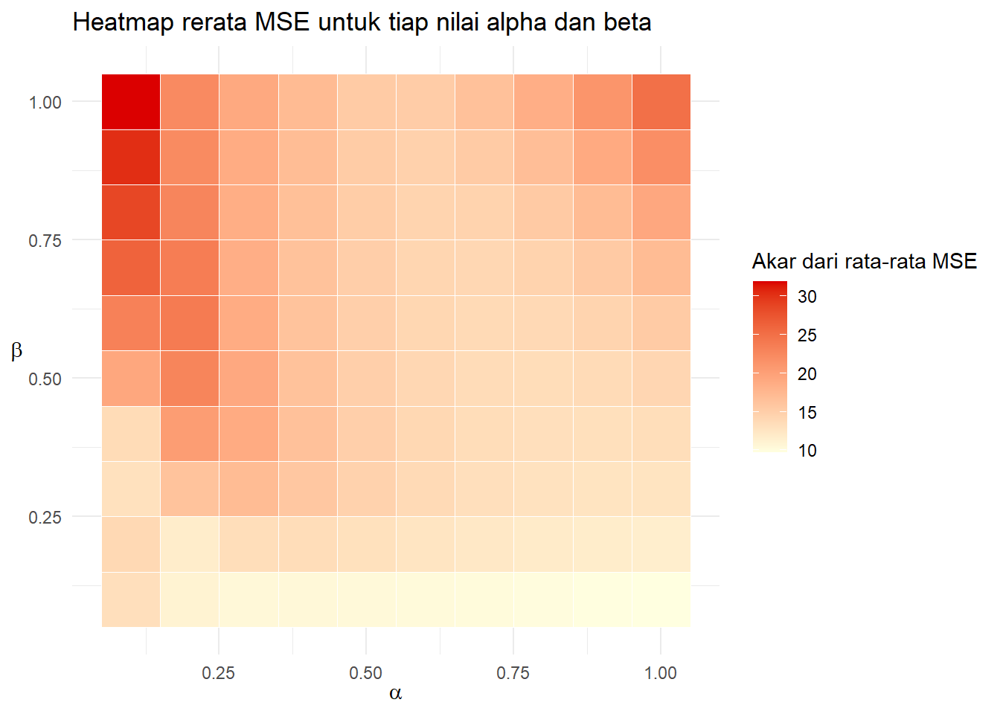
Terlihat bahwa di beta lebih dari \(0.1\) rata-rata dari MSE relatif lebih besar. Bagaimana dengan ragam dari MSE (menggunakan skala log agar mudah dilihat).
ggplot(aggregateDES, aes(alphrange, betarange)) +
geom_tile(aes(fill = log(varMSE)), colour = "white") +
scale_fill_gradient('Log dari ragam MSE', low="#FFFFE0",high="#DB0000")+
ggtitle("Heatmap ragam MSE untuk tiap nilai alpha dan beta")+
theme_minimal()+theme(axis.title.y = element_text(angle = 0, vjust = 0.5))+
xlab(TeX(r"($\alpha$)"))+ylab(TeX(r"($\beta$)"))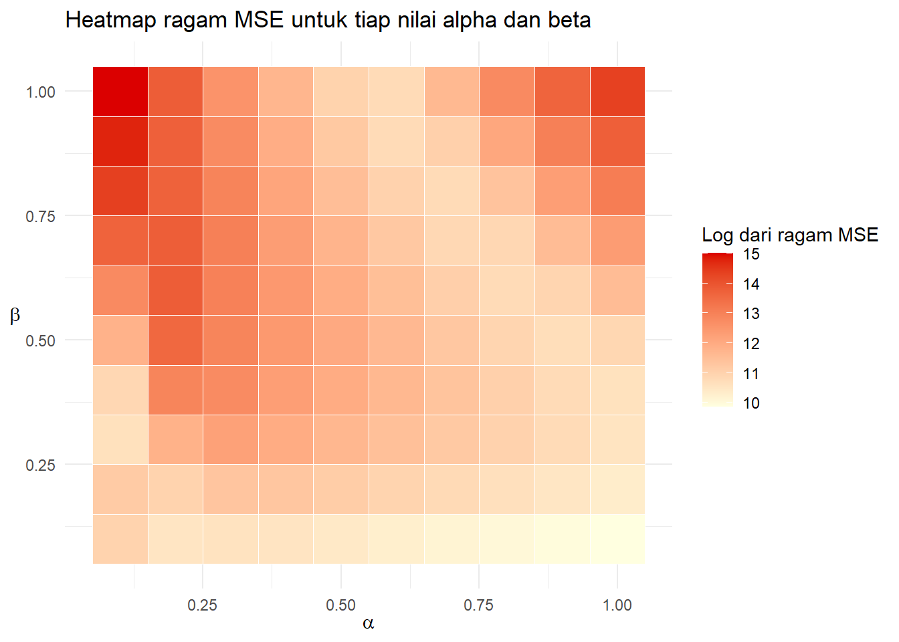
Ragam dari MSE mengikuti rata-rata MSE. Di beta lebih dari 0.1, ragam MSE relatif besar. Tampak bahwa ragam MSE juga mengecil jika alpha mendekati 1. Bagaimana dengan MAPE?
ggplot(aggregateDES, aes(alphrange, betarange)) +
geom_tile(aes(fill = meanMAPE), colour = "white") +
scale_fill_gradient('Rata-rata MAPE', low="#FFFFE0",high="#DB0000")+
ggtitle("Heatmap rerata MAPE untuk tiap nilai alpha dan beta")+
theme_minimal()+theme(axis.title.y = element_text(angle = 0, vjust = 0.5))+
xlab(TeX(r"($\alpha$)"))+ylab(TeX(r"($\beta$)"))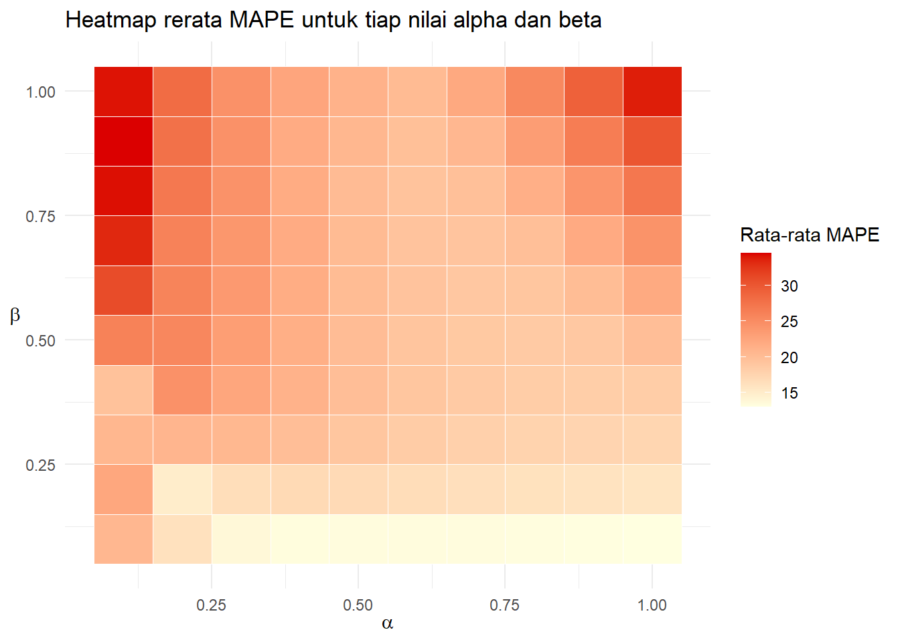
Pola cukup mengikuti MSE sebelumnya, tetapi tampaknya MAPE minimum di alpha mendekati 0.5. Bagaimana dengan ragamnya:
ggplot(aggregateDES, aes(alphrange, betarange)) +
geom_tile(aes(fill = sqrt(varMAPE)), colour = "white") +
scale_fill_gradient('Akar dari ragam MAPE', low="#FFFFE0",high="#DB0000")+
ggtitle("Heatmap ragam MAPE untuk tiap nilai alpha dan beta")+
theme_minimal()+theme(axis.title.y = element_text(angle = 0, vjust = 0.5))+
xlab(TeX(r"($\alpha$)"))+ylab(TeX(r"($\beta$)"))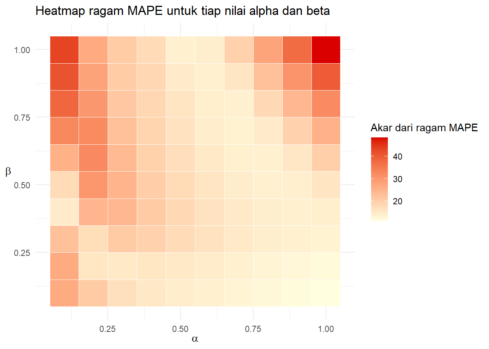
Ragam MAPE memiliki pola yang cukup beda. Ragam tersebut nampak minimum di diagonal antara Beta 0.5 dan alpha mendekati nol ke Beta 0.2 dan Alpha 0.25. Lakukan pemeringkatan:
ggplot(aggregateDES, aes(alphrange, betarange)) +
geom_tile(aes(fill = meanMAE), colour = "white") +
scale_fill_gradient('Rata-rata MAE', low="#FFFFE0",high="#DB0000")+
ggtitle("Heatmap rerata MAE untuk tiap nilai alpha dan beta")+
theme_minimal()+theme(axis.title.y = element_text(angle = 0, vjust = 0.5))+
xlab(TeX(r"($\alpha$)"))+ylab(TeX(r"($\beta$)"))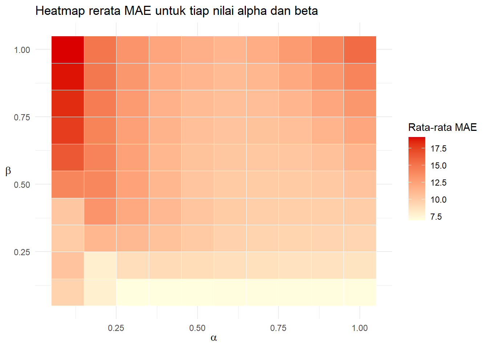
Mean dari MAE memiliki pola sama seperti sebelumnya.
ggplot(aggregateDES, aes(alphrange, betarange)) +
geom_tile(aes(fill = sqrt(varMAE)), colour = "white") +
scale_fill_gradient('Akar dari ragam MAE', low="#FFFFE0",high="#DB0000")+
ggtitle("Heatmap ragam MAE untuk tiap nilai alpha dan beta")+
theme_minimal()+theme(axis.title.y = element_text(angle = 0, vjust = 0.5))+
xlab(TeX(r"($\alpha$)"))+ylab(TeX(r"($\beta$)"))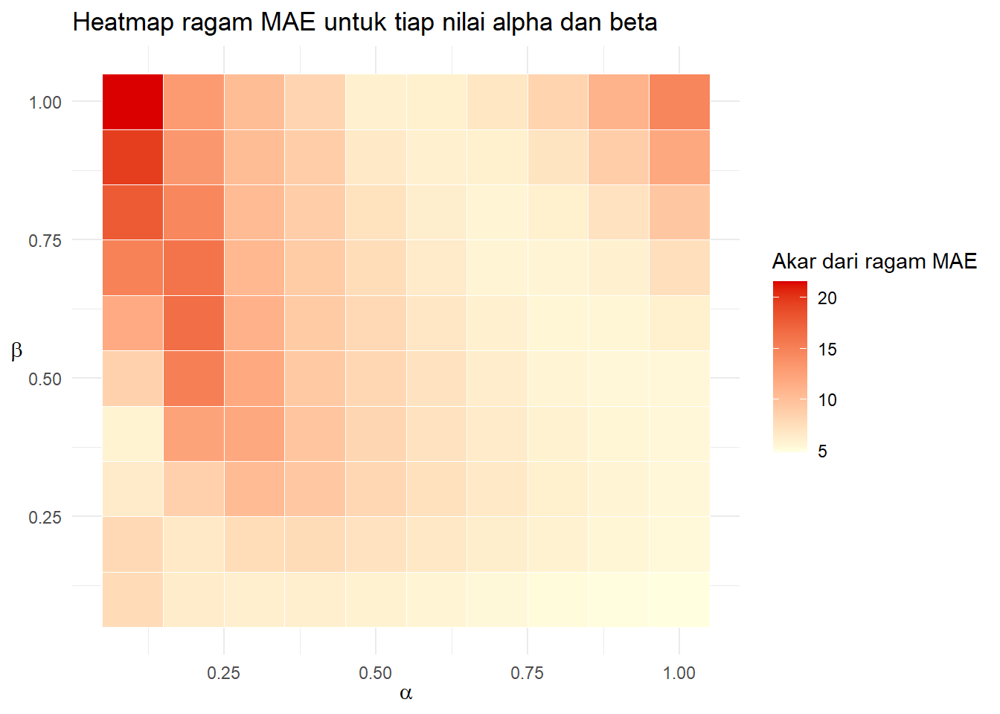
Akar dari ragam MAE tampak minimum di diagonal dan di alpha 0.3 sampai 0.6.
knitr::kables(list(
knitr::kable(head(setorder(aggregateDES, meanMSE)[,c(1,2,3)],n=5),
col.names=c("$\\alpha$","$\\beta$","MSE")),
knitr::kable(head(setorder(aggregateDES, meanMAPE)[,c(1,2,5)],n=5),
col.names=c("$\\alpha$","$\\beta$","MAPE")),
knitr::kable(head(setorder(aggregateDES, meanMAE)[,c(1,2,7)],n=5),
col.names=c("$\\alpha$","$\\beta$","MAE"))
), caption="Rata-rata metrik akurasi di semua iterasi untuk tiap kombinasi nilai parameter."
)
|
|
|
Nampak kombinasi alpha dan beta 0.4 dan 0.1 cukup baik dalam meminmumkan rataan error. Terlihat bahwa range alpha yang meminimumkan MSE dan MAPE kira kira 0.3 sampai 0.6. Pencarian lebih detail dapat dilakukan di daerah ini.
knitr::kables(list(
knitr::kable(head(setorder(aggregateDES, varMSE)[,c(1,2,4)],n=7),
col.names=c("$\\alpha$","$\\beta$","MSE")),
knitr::kable(head(setorder(aggregateDES, varMAPE)[,c(1,2,6)],n=7),
col.names=c("$\\alpha$","$\\beta$","MAPE")),
knitr::kable(head(setorder(aggregateDES, varMAE)[,c(1,2,8)],n=7),
col.names=c("$\\alpha$","$\\beta$","MAE"))
), caption="Ragam metrik akurasi di semua iterasi untuk tiap kombinasi nilai parameter."
)
|
|
|
Terlihat bahwa kriteria peminimuman ragam MSE dan MAPE berbeda dari peminimuman rata-rata MSE dan MAPE.
Lakukan iterasi kedua untuk range \(\alpha\ 0.3-0.6\), \(\beta\ 0.01-0.2\):
DESCV2<-fcCV(weeklyCrude[,3],initialn=36,folds=15,type="DES",alphrange=seq(0.3,0.6,0.01),betarange=seq(0.01,0.2,0.01))Masukkan hasilnya:
resultDES2<-DESCV2[[3]]Langsung lakukan agregasi:
aggregateDES2<-resultDES2[,`.`(meanMSE=mean(MSE),
varMSE=var(MSE),
meanMAPE=mean(MAPE),
varMAPE=var(MAPE),
meanMAE=mean(MAE),
varMAE=var(MAE)), by=list(alphrange,betarange)]Nilai nilai apa saja yang menimumkan MSE, MAPE, dan MAE:
knitr::kables(list(
knitr::kable(head(setorder(aggregateDES2, meanMSE)[,c(1,2,3)],n=5),
col.names=c("$\\alpha$","$\\beta$","MSE")),
knitr::kable(head(setorder(aggregateDES2, meanMAPE)[,c(1,2,5)],n=5),
col.names=c("$\\alpha$","$\\beta$","MAPE")),
knitr::kable(head(setorder(aggregateDES2, meanMAE)[,c(1,2,7)],n=5),
col.names=c("$\\alpha$","$\\beta$","MAE"))
), caption="Rata-rata metrik akurasi di semua iterasi untuk tiap kombinasi nilai parameter."
)
|
|
|
Dan ragamnya.
knitr::kables(list(
knitr::kable(head(setorder(aggregateDES2, varMSE)[,c(1,2,4)],n=5),
col.names=c("$\\alpha$","$\\beta$","MSE")),
knitr::kable(head(setorder(aggregateDES2, varMAPE)[,c(1,2,6)],n=5),
col.names=c("$\\alpha$","$\\beta$","MAPE")),
knitr::kable(head(setorder(aggregateDES2, varMAE)[,c(1,2,8)],n=5),
col.names=c("$\\alpha$","$\\beta$","MAE"))
), caption="Ragam metrik akurasi di semua iterasi untuk tiap kombinasi nilai parameter."
)
|
|
|
Plot iterasi mana yang susah:
ggplot(resultDES,aes(x=iter,y=MAPE,group=iter))+
geom_boxplot(fill="#E69F00")+theme_minimal()+
ggtitle("Boxplot MAPE tiap Iterasi")+
xlab("Iterasi")+ylab(" ")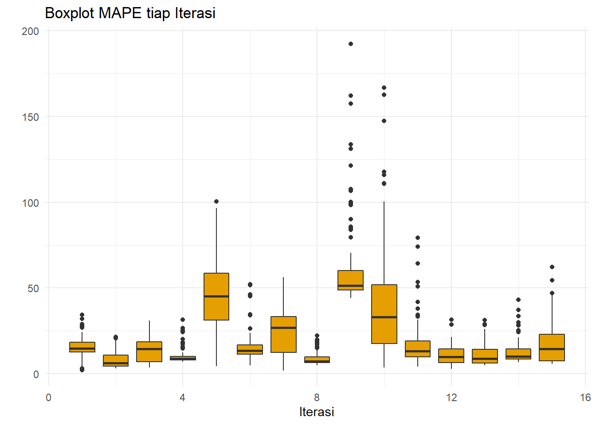
Sama seperti sebelumnya, performa pemulusan buruk saat COVID.
3.7 Kesimpulan
Suatu hasil peramalan dikatakan baik apabila nilai dari metode peramalannya mendekati data aktual serta memiliki tingkat kesalahan yang paling kecil.
Untuk itu pemilihan metode terbaik dapat dipilih berdasarkan nilai MSE, MAPE, dan MAE.
knitr::kables(list(
knitr::kable(head(setorder(aggregateSMA, meanMSE)[,c(1,2)],n=1),
col.names=c("M","MSE")),
knitr::kable(head(setorder(aggregateSMA, meanMAPE)[,c(1,4)],n=1),
col.names=c("M","MAPE")),
knitr::kable(head(setorder(aggregateSMA, meanMAE)[,c(1,6)],n=1),
col.names=c("M","MAE"))
),caption="SMA"
)
|
|
|
knitr::kables(list(
knitr::kable(head(setorder(aggregateDMA, meanMSE)[,c(1,2)],n=1),
col.names=c("M","MSE")),
knitr::kable(head(setorder(aggregateDMA, meanMAPE)[,c(1,4)],n=1),
col.names=c("M","MAPE")),
knitr::kable(head(setorder(aggregateDMA, meanMAE)[,c(1,6)],n=1),
col.names=c("M","MAE"))
),caption="DMA"
)
|
|
|
knitr::kables(list(
knitr::kable(head(setorder(aggregateSES, meanMSE)[,c(1,2)],n=1),
col.names=c("$\\alpha$","MSE")),
knitr::kable(head(setorder(aggregateSES, meanMAPE)[,c(1,4)],n=1),
col.names=c("$\\alpha$","MAPE")),
knitr::kable(head(setorder(aggregateSES, meanMAE)[,c(1,6)],n=1),
col.names=c("$\\alpha$","MAE"))
),caption="SES"
)
|
|
|
knitr::kables(list(
knitr::kable(head(setorder(aggregateDES2, meanMSE)[,c(1,2,3)],n=1),
col.names=c("$\\alpha$","$\\beta$","MSE")),
knitr::kable(head(setorder(aggregateDES2, meanMAPE)[,c(1,2,5)],n=1),
col.names=c("$\\alpha$","$\\beta$","MAPE")),
knitr::kable(head(setorder(aggregateDES2, meanMAE)[,c(1,2,7)],n=1),
col.names=c("$\\alpha$","$\\beta$","MAE"))
),caption="DES"
)
|
|
|
Berdasarkan hasil di atas, dapat dilihat bahwa nilai ketepatan yang lebih kecil dibanding dengan metode lainnya adalah DES dengan nilai MSE = 116.593, MAPE = 14.82092.
3.8 Addendum: Last Block
Tadi digunakan validasi silang untuk mengukur akurasi di berbagai kemungkinan data testing. Bagaimana jika data dianggap terganggu secara signifikan, dan hanya blok terakhir yang relevan? Ambil saja iterasi terakhir dari hasil validasi silang:
lbSMA<-resultSMA[,`.`("MSE"=last(MSE),
"MAE"=last(MAE),
"MAPE"=last(MAPE)),by=list(M)]
lbDMA<-resultDMA[,`.`("MSE"=last(MSE),
"MAE"=last(MAE),
"MAPE"=last(MAPE)),by=list(M)]
lbSES<-resultSES[,`.`("MSE"=last(MSE),
"MAE"=last(MAE),
"MAPE"=last(MAPE)),by=list(alpha)]
lbDES<-resultDES[,`.`("MSE"=last(MSE),
"MAE"=last(MAE),
"MAPE"=last(MAPE)),by=list(alphrange,betarange)]Lalu, cari saja nilai yang meminimumkan error:
knitr::kables(list(
knitr::kable(head(setorder(lbSMA, MSE)[,c(1,2)],n=1),
col.names=c("M","MSE")),
knitr::kable(head(setorder(lbSMA, MAE)[,c(1,3)],n=1),
col.names=c("M","MAE"))
),caption="SMA"
)
|
|
knitr::kables(list(
knitr::kable(head(setorder(lbDMA, MSE)[,c(1,2)],n=1),
col.names=c("M","MSE")),
knitr::kable(head(setorder(lbDMA, MAE)[,c(1,3)],n=1),
col.names=c("M","MAE"))
),caption="DMA"
)
|
|
knitr::kables(list(
knitr::kable(head(setorder(lbSES, MSE)[,c(1,2)],n=1),
col.names=c("$\\alpha$","MSE")),
knitr::kable(head(setorder(lbSES, MAE)[,c(1,3)],n=1),
col.names=c("$\\alpha$","MAE"))
),caption="SES"
)
|
|
knitr::kables(list(
knitr::kable(head(setorder(lbDES, MSE)[,c(1,2,3)],n=1),
col.names=c("$\\alpha$","$\\beta$","MSE")),
knitr::kable(head(setorder(lbDES, MAE)[,c(1,2,5)],n=1),
col.names=c("$\\alpha$","$\\beta$","MAE"))
),caption="DES"
)
|
|
DES dengan \(\alpha=1\) dan \(\beta=0.8-0.9\) baik untuk data ini. Lakukan pemulusan:
des1<-esWrapper(weeklyCrude[,3][1:260],
HoltWinters(weeklyCrude[,3][1:260],alpha=1,beta=0.8,gamma=F),
16)
smooth<- cbind(weeklyCrude,c(des1[[1]]$Smoothed,rep(NA,16)),c(rep(NA,260),des1[[2]]$forc))Plot hasil pemulusan tersebut:
ggplot(aes(x=Date,y=Close),data=smooth)+geom_point( size=2, alpha=.3, color="grey")+
geom_line(aes(y=V2,color="Pemulusan"), ,size=0.5)+
geom_line(aes(y=V3, color="Prediksi"),size=0.5)+
ylab("")+xlab("Waktu")+
ggtitle(TeX(r'(Hasil pemulusan dan prediksi DES $\alpha=1$, $\beta=0.8$)'))+
scale_color_manual(name='DES',
breaks=c('Pemulusan', 'Prediksi'),
values=c('Pemulusan'='black', 'Prediksi'='#DB0000'))+
theme_minimal()Atau,
des2<-esWrapper(weeklyCrude[,3][1:260],
HoltWinters(weeklyCrude[,3][1:260],alpha=1,beta=0.9,gamma=F),
16)
smooth<- cbind(weeklyCrude,c(des2[[1]]$Smoothed,rep(NA,16)),c(rep(NA,260),des2[[2]]$forc))Plot hasil pemulusan tersebut:
ggplot(aes(x=Date,y=Close),data=smooth)+geom_point( size=2, alpha=.3, color="grey")+
geom_line(aes(y=V2,color="Pemulusan"), ,size=0.5)+
geom_line(aes(y=V3, color="Prediksi"),size=0.5)+
ylab("")+xlab("Waktu")+
ggtitle(TeX(r'(Hasil pemulusan dan prediksi DES $\alpha=1$, $\beta=0.9$)'))+
scale_color_manual(name='DES',
breaks=c('Pemulusan', 'Prediksi'),
values=c('Pemulusan'='black', 'Prediksi'='#DB0000'))+
theme_minimal()## Warning: Removed 20 row(s) containing missing values (geom_path).## Warning: Removed 262 row(s) containing missing values (geom_path).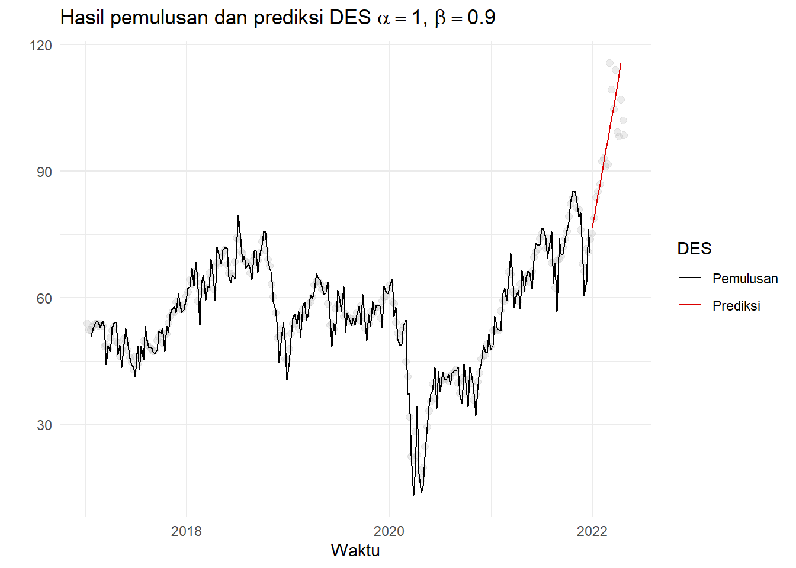
Plot hasil DMA:
dma<-dma.dt(weeklyCrude[,3][1:260],3,16)
smooth<- cbind(weeklyCrude,c(dma[[1]]$forc,rep(NA,16)),c(rep(NA,260),dma[[2]]$forc))Plot hasil pemulusan tersebut:
ggplot(aes(x=Date,y=Close),data=smooth)+geom_point( size=2, alpha=.3, color="grey")+
geom_line(aes(y=V2,color="Training"), ,size=0.5)+
geom_line(aes(y=V3, color="Testing"),size=0.5)+
ylab("")+xlab("Waktu")+
ggtitle(TeX(r'(Hasil prediksi DMA $m=3$)'))+
scale_color_manual(name='Prediksi DMA',
breaks=c('Training', 'Testing'),
values=c('Training'='black', 'Testing'='#DB0000'))+
theme_minimal()## Warning: Removed 23 row(s) containing missing values (geom_path).## Warning: Removed 262 row(s) containing missing values (geom_path).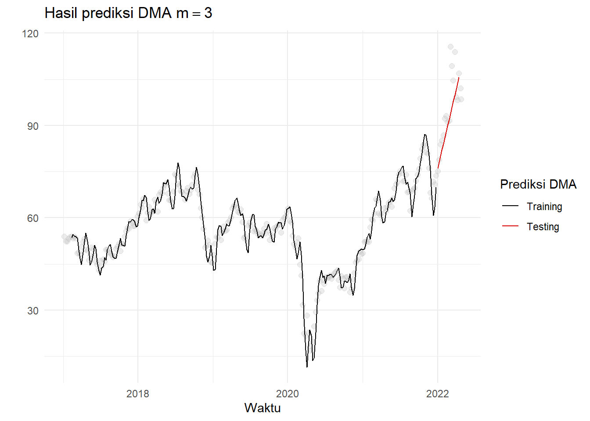
SMA?
smar<-sma.dt(weeklyCrude[,3][1:260],12,16)
smooth<- cbind(weeklyCrude,c(smar[[1]]$forc,rep(NA,16)),c(rep(NA,260),smar[[2]]$forc))Plot hasil pemulusan tersebut:
ggplot(aes(x=Date,y=Close),data=smooth)+geom_point( size=2, alpha=.3, color="grey")+
geom_line(aes(y=V2,color="Training"), ,size=0.5)+
geom_line(aes(y=V3, color="Testing"),size=0.5)+
ylab("")+xlab("Waktu")+
ggtitle(TeX(r'(Hasil prediksi SMA $m=12$)'))+
scale_color_manual(name='Prediksi SMA',
breaks=c('Training', 'Testing'),
values=c('Training'='black', 'Testing'='#DB0000'))+
theme_minimal()## Warning: Removed 30 row(s) containing missing values (geom_path).## Warning: Removed 262 row(s) containing missing values (geom_path).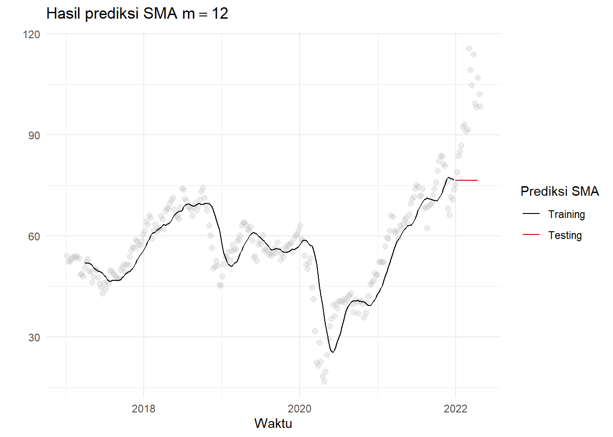
Forecast dari plot deret waktu tampak buruk. Note: SES(1) sama saja dengan menggunakan data yang paling recent, sehingga plot SES akan tampak relatif sama dengan SMA.